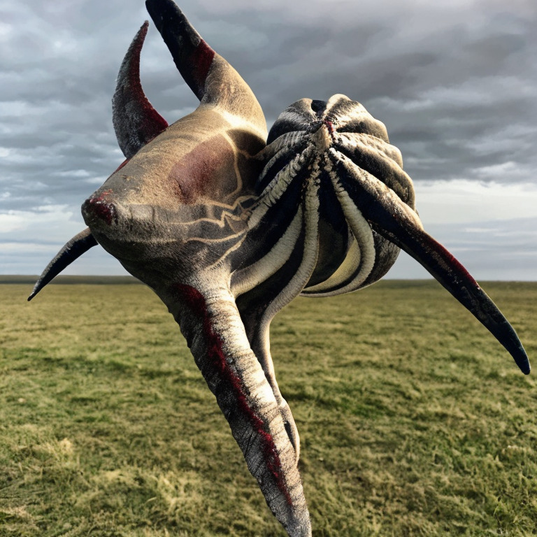
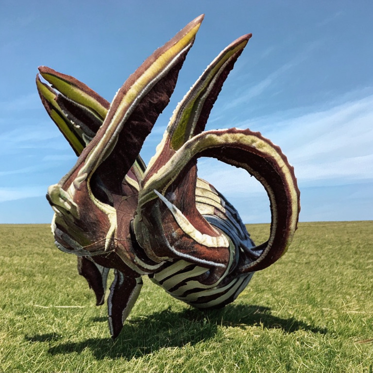
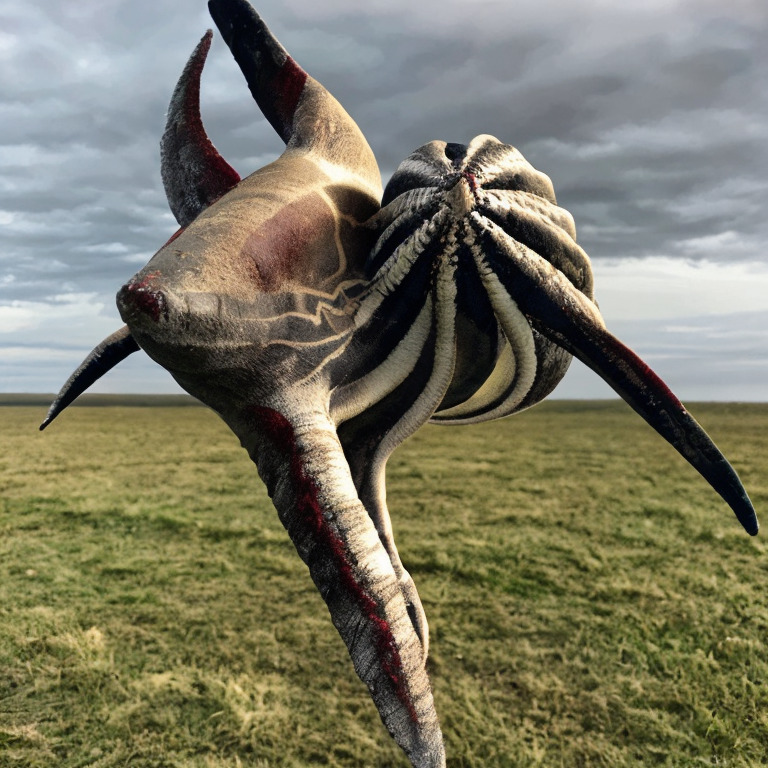
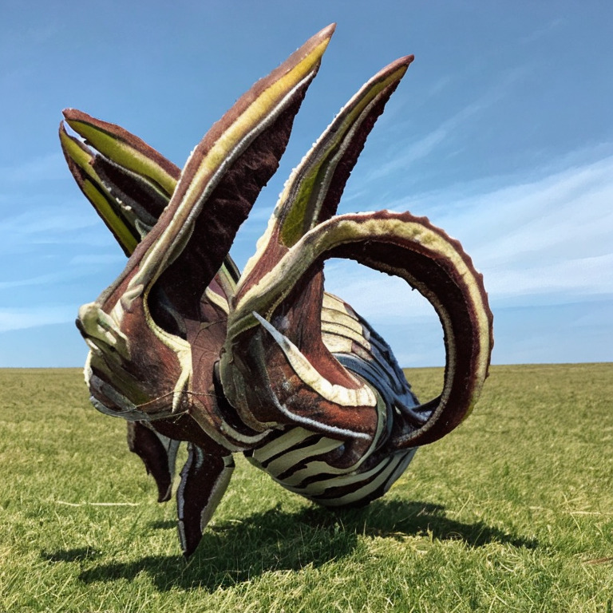
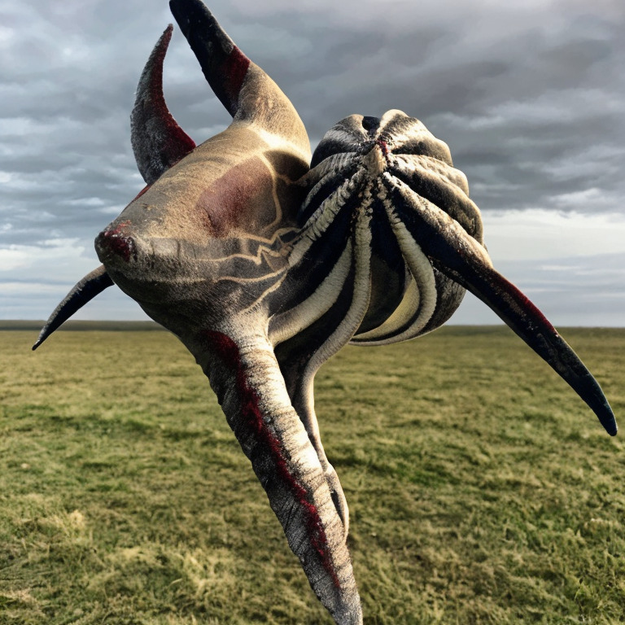
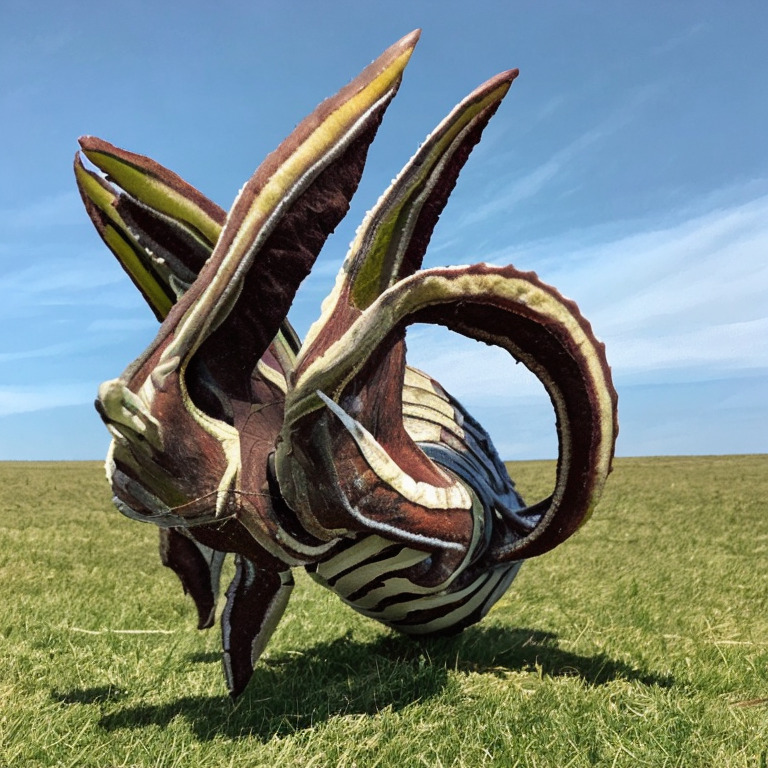

This concept was fine-tuned using input images influential to the collaborating artist's studio practice. During the process, the model showed a surprisingly appropriate preference for surreal / spiritual photographic images and responded well to prompts containing words like "masks" and "skulls".
The input images for the concept can be viewed in it's documentation and the bulk output images can be viewed in the Google Drive link at the bottom of the page. All the text prompts for the images can be viewed there or by hovering over the images.
model documentation

